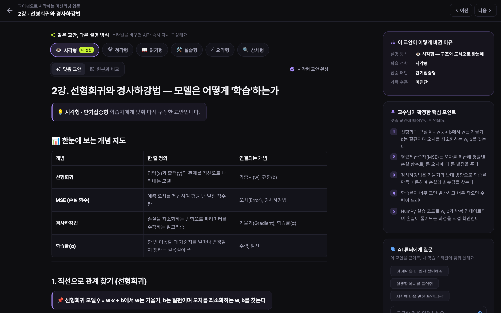
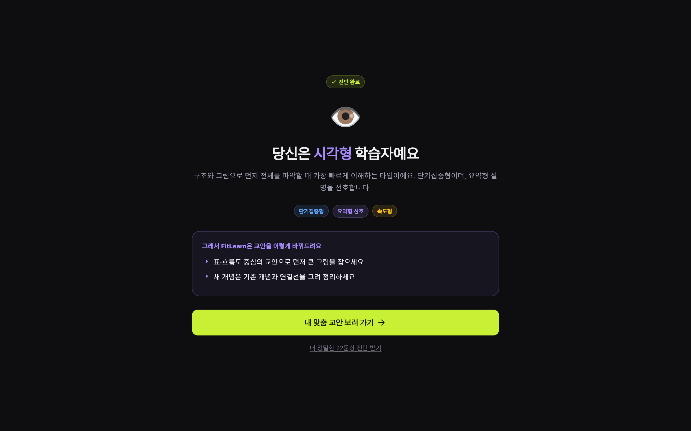
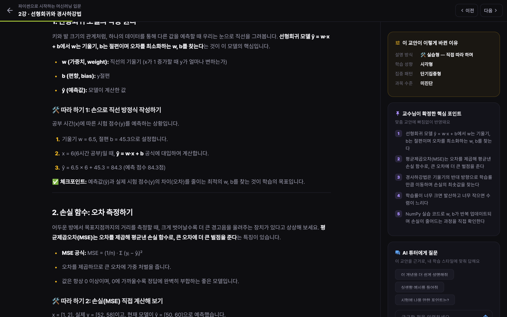
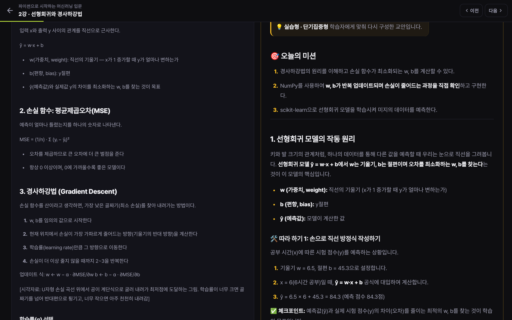
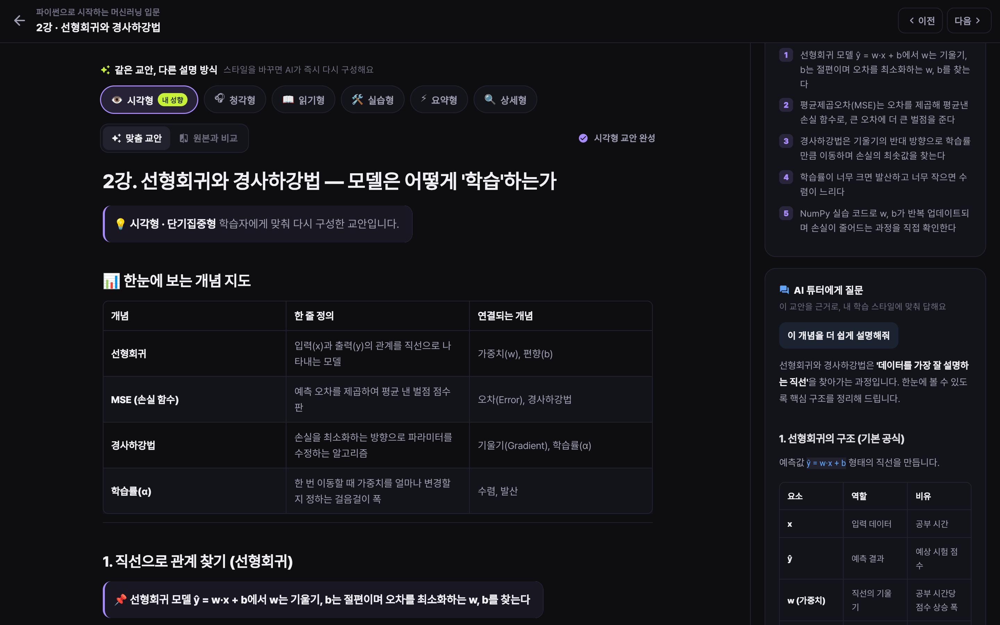
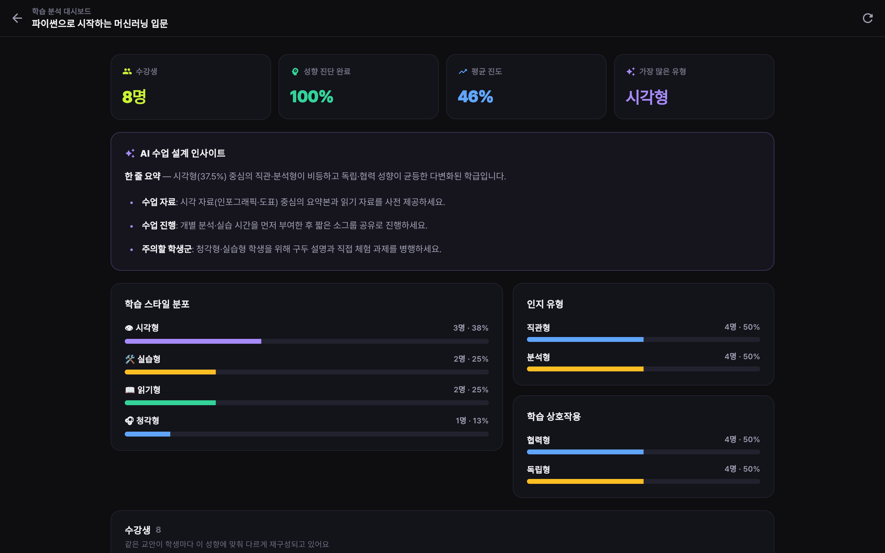
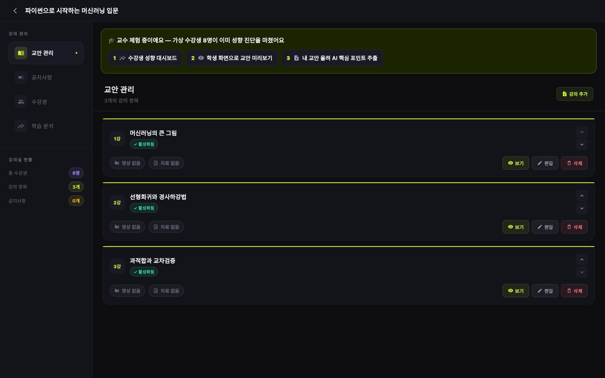
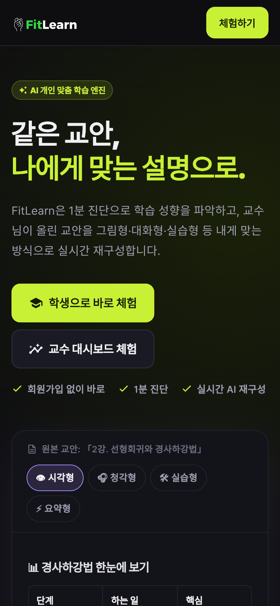
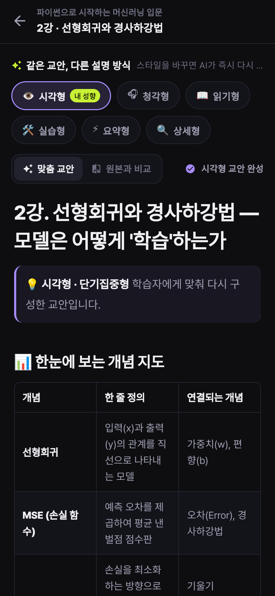

FitLearn은 1분 진단으로 학습 성향을 파악하고, 교수님이 올린 교안을 시각형·청각형·실습형 등 내게 맞는 방식으로 실시간 재구성합니다.

어떤 학생은 그림으로, 어떤 학생은 말로, 어떤 학생은 직접 해봐야 이해합니다. 하지만 온라인 강의는 하나의 교안과 하나의 설명 방식만 제공합니다. 단순 요약 AI는 실습 코드와 교수님의 의도마저 지워버립니다.
원본의 개념·코드·수식은 그대로 두고, 전달하는 구조와 어조만 학습자에게 맞게 바꿉니다.
6가지 질문으로 시각·청각·읽기·실습 중 어떤 방식이 잘 맞는지, 집중 패턴과 선호 분량까지 파악합니다.
교안을 올리면 AI가 내용상의 핵심을 뽑고 교수님이 검토·확정합니다. 맞춤 교안은 이 포인트를 절대 빠뜨리지 않아요.
성향·집중 패턴·과목 수준을 반영해 교안을 다시 씁니다. 글이 써지는 과정을 스트리밍으로 바로 확인합니다.
AI 호출 없이 즉시 결과가 나오고, 결과에 맞춘 교안 전략을 바로 보여줍니다. 더 정밀한 22문항 진단도 준비되어 있어요.

버튼 하나로 설명 방식을 바꾸면 AI가 즉시 다시 구성합니다. 시각형은 개념 지도와 비교표, 실습형은 미션과 따라 하기, 청각형은 질문과 대화체로.

무엇이 어떻게 바뀌었는지 투명하게 확인할 수 있어 AI 결과를 믿고 학습할 수 있습니다.

질문에 교안을 근거로, 내 학습 스타일에 맞춰 답합니다. 교안에 없는 내용은 없다고 밝힙니다.

수강생 성향 분포와 함께, AI가 다음 수업에서 바로 쓸 수 있는 자료·진행·주의 학생군 제안을 정리합니다.

교수님은 핵심 포인트를 검토·확정만 하면 됩니다. 수업 의도가 모든 맞춤 교안에 그대로 반영됩니다.

모든 화면이 모바일에 맞춰 재배치됩니다.


Flutter Web · Riverpod · GoRouter · EventSource(SSE) 스트리밍 · 자체 디자인 시스템 · Vercel
FastAPI · SSE 스트리밍 · Firestore + 인메모리 자동 폴백 · 원클릭 데모 부트스트랩 · Railway
Gemini 3.5 Flash + 모델 폴백 체인 · 스타일별 재구성 설계도 · 교육 이론(VARK·CLT·Kolb) 기반 프롬프트